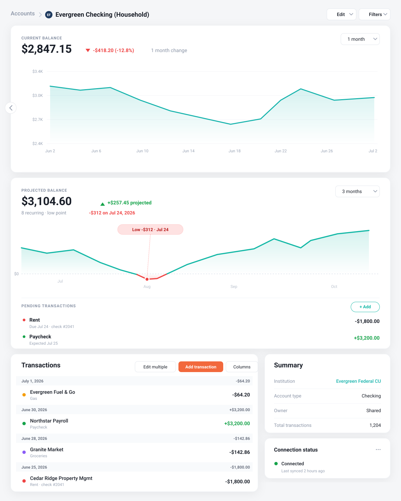

A forward-looking, day-by-day balance projection for any account — so you know whether that check clears before payday, not after. Plus a pending-transactions register and a reconciler that quietly cleans up after itself.
Free & open source (MIT) · installs in about a minute via Load unpacked

The extension in context on an account page. All data shown is fictional.
Three things Monarch doesn't do natively, added right beneath the Current Balance graph on any account page.
A day-by-day projection of a single account's balance, built from Monarch's recurring items and your future-dated transactions. Hover any day to see the payees and amounts driving each change.
If the projection dips below zero, the line turns red and the exact date is flagged — so "will this check survive until payday?" gets a real answer.
⚠ Flags the day you'd go negativeWrote a check? Committed to a transfer? Log it the moment it happens — before the bank sees it. It rides the projection as a committed outflow (or inflow) until it clears.
No more mental math about money that's spent but not yet posted.
Stored in your browser onlyWhen a posted transaction matches a pending item exactly — same check number, same amount — it clears silently. A plausible amount-and-date match asks you to confirm. Anything uncertain is left alone.
This dissolves the duplicate problem you'd get from entering future transactions directly in Monarch.
✓ Auto-clears only when it's sureNot yet on the Chrome Web Store — it loads as an unpacked extension in about a minute. Download the ZIP above, or clone:
git clone https://github.com/asivar/monarch-projected-balance.git
chrome://extensions and enable Developer mode (top right).about:debugging#/runtime/this-firefox.manifest.json.Firefox temporary add-ons unload on restart; a permanent install requires signing via addons.mozilla.org. The code is identical either way.
This page also serves as the extension's privacy policy.
storage permission and runs only on Monarch's site.